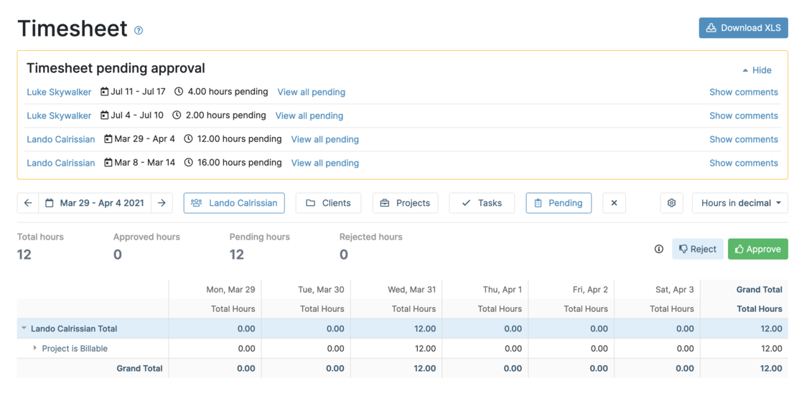
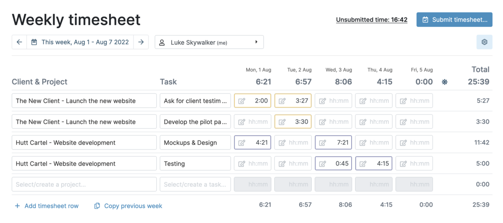
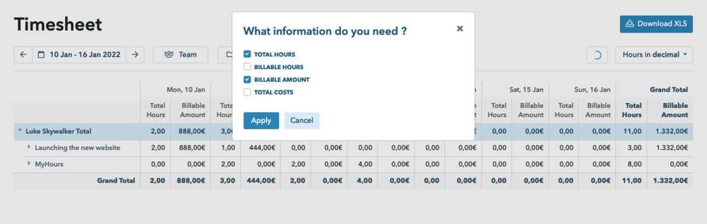
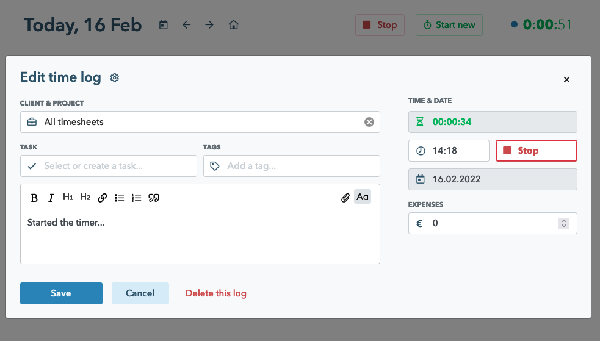
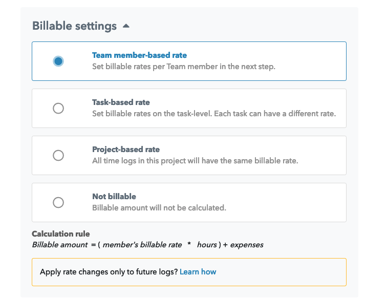
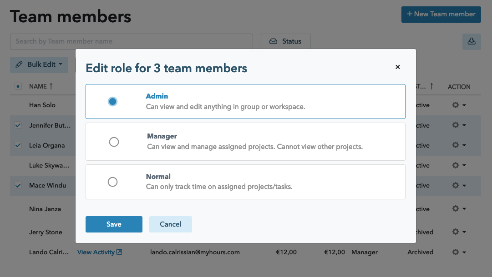
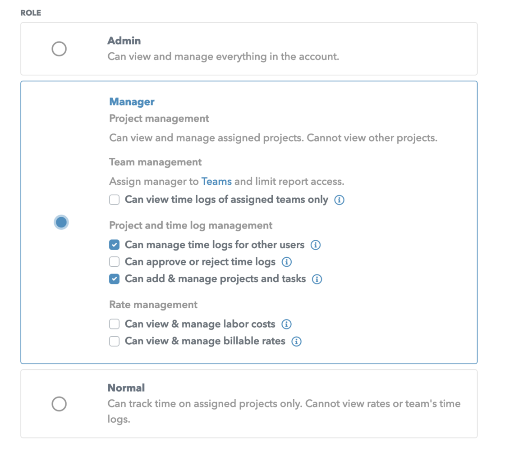
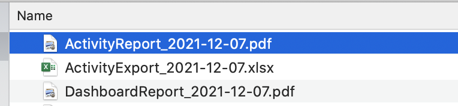
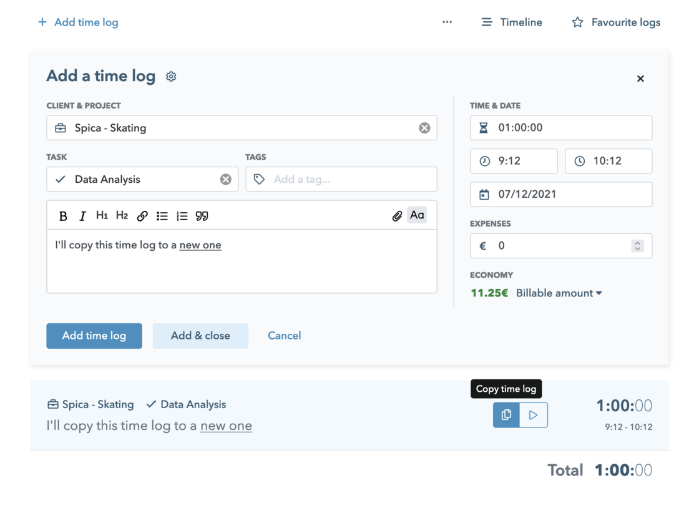
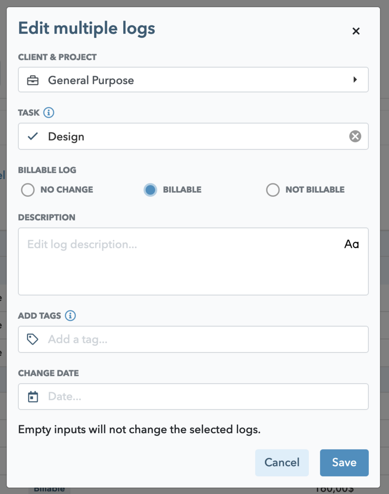

Approve timesheets via Timesheet report
My Hours customers that use the Approval workflow will be glad to learn that supervisors (admins or managers with permissions) can now Approve or Reject timesheets via Timesheet report as well.
When a supervisor is not interested in the details of each individual time log, the Timesheet report is the perfect interface to approve or reject timesheets in bulk.
Please note that this interface is currently available only for accounts with manual timesheet submission (see previous changelog item).
Submit timesheets manually
Until now, the entered timesheets were always saved and submitted automatically. This was sometimes an issue in case a person was not yet finished with their timesheet. On the other hand, supervisors weren't really sure whether the data in the reports is final.
From now on, administrators can decide on "Manual timesheet submission" which enables their team members to keep drafts of their timesheet as "Unsubmitted time". And only when they are ready, they can submit the timesheet and leave a message to their supervisor.
Unsubmitted inputs are marked with a blue border. To learn more about how it works, take a look at the help article.
Billable amount and Costs on Timesheet report
Many of you use Timesheet as the default report and you'll be glad to see that we have now added Billable amount and Total costs columns to it as well. You can add them to the view with the standard column chooser.
Improvements here and there
We added a few improvements in the past weeks.
Stop timer directly in the Time log form
New default for Project billing settings: Team member-based rate
New account setting: disallow approval of member's own time logs
With this setting ON, administrators or managers cannot approve or reject their own time logs.
Saved default report set-up
All reports will now memorize your settings (such as selected columns) so you don't need to set them up every time.
Bulk editing of Team members
Administrators will be glad to learn that you can now update Team members in bulk. Archive, change rates, roles or approval settings for multiple team members at once.
Changed (Project) Manager role
We re-thought the Project manager role, re-developed it from scratch and re-named it to "Manager".
By default, the Manager role works the same way as did the Project manager role. Only it's even more powerful and flexible.
Administrators can invite new or edit existing team members with a Manager role and decide to:
Limit reporting access to only their Team (you'll find Team assignments under "Teams" section)
Enable the person to also manage, approve or reject logs of their team members
Disable editing of projects and tasks (read-only access)
Hide labor or billing rates
With regard to the 4th point above, we should note that all users can still view their own costs (labor and expenses), but can never view rates of other team members. Unless you allow specific Managers to have access to labor or billing rates.
For existing accounts: all Project managers will be migrated to the Manager role. Nothing will change for them,unless you decide to make changes in the Team members section.
In case you allowed Project managers to view Billing rates (via Account settings), your Managers will have this option turned on.
Improved filenames of downloaded reports
In order to keep your reports organized when downloaded, we added a date stamp to the file name.
Copy time log
Much requested feature of copying time logs is now available for all on the new Track daily timer interface.
Lock entire date range
While My Hours offered an auto-locking feature for a while, we kept hearing that it needs to be improved. So we rewrote the locking system from scratch. Administrators can enable daily, weekly or monthly lock, which will result in:
The system will lock every time log in the past (not only from the moment on)
When a date period is locked, Normal users and Managers can no longer add, edit or delete logs in that period.
Administrators can add, edit or delete logs even in the locked period. Bulk editing is disabled for all.
Update billable setting in bulk
Editing time logs in bulk was always available in the Activity report. With the new release we've added the ability to change the billable flag for multiple time logs in bulk.
